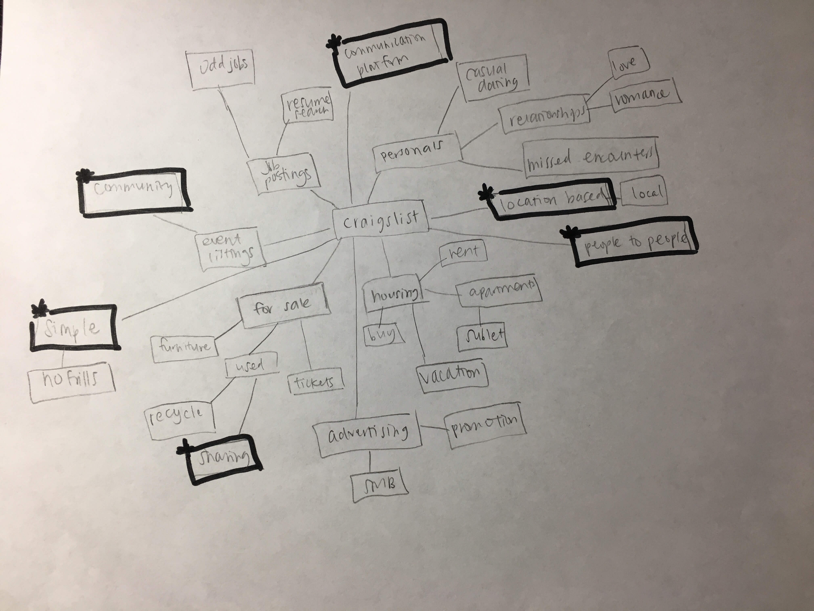
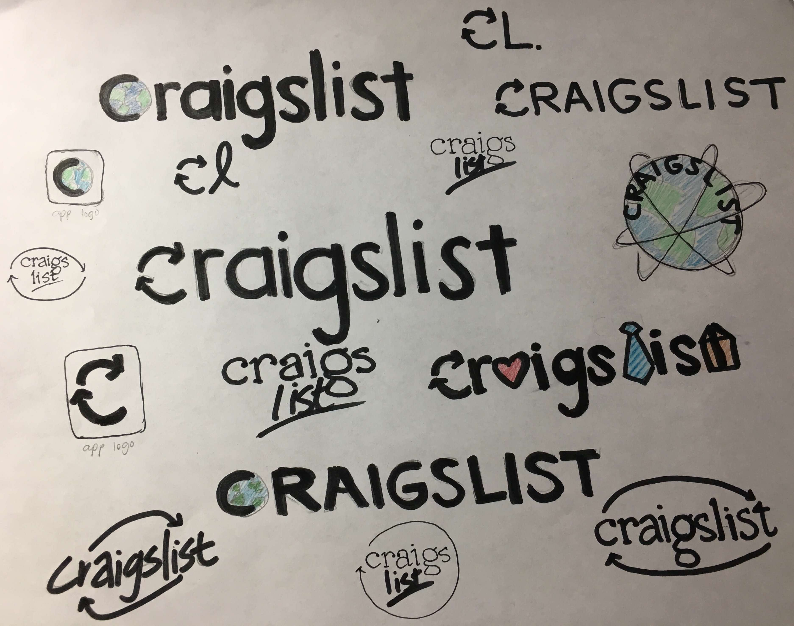
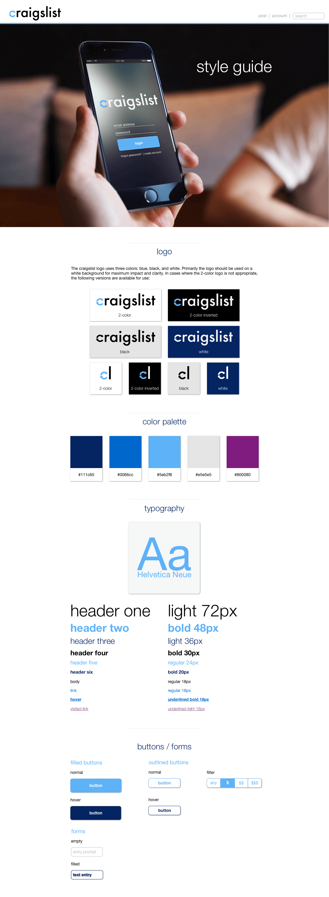

Background
craigslist (lower case "c” intentional) has always been an interesting case study amongst designers—how can something that hasn’t been updated visually since the 1990s work so well from a design perspective? There are a few theories:
- It’s simple and easy-to-use; users don’t have to relearn how to use it whenever an update comes out
- The information architecture is superb—everything is well organized, even if it doesn’t look great
- The lack of flashy design actually helps users accomplish what they need to do more quickly
I set out to see if a rebrand of craigslist while keeping the above core principles intact was at all possible.
Overview
The Problem: Retaining Simplicity
The best part of craigslist is its simplicity—users are able to navigate the site quickly and find what they are looking for. In my design, I wanted to retain that element of simplicity while adding stylistic accents that would flow cohesively throughout the design.
The Solution: Focus on Content
The revamped but simple design allows users to focus on content rather than spend time figuring out navigation and being distracted by complex design elements, furthering craigslist's mission to "connect the world for the common good."
Tools Used


MIND MAP
To get some creative juices flowing, I laid out a quick mind map of terms I associate with craigslist.
craigslist is a platform to connect people. When moving to new places or traveling in different areas, it can be used as a way to find local events, housing, or job opportunities. It's also a place to find used items that have history—items are passed on from person to person. Even though an item is no longer of use to the original owner, it can represent something significant for the next person.
The words and phrases that stood out the most to me were:
- Communication platform
- Location based
- People-to-people
- Sharing
- Simple
- Community
craigslist is a platform for almost everything under the sun—there are job postings, personal ads, housing ads, items for sale. It's an all-encompassing circle.
LOGO DESIGN
Using the above concepts as inspiration, I sketched out a few thumbnails for potential logos. I played around with adding color and experimented with different font styles.
STYLE GUIDE
The final step in my craigslist rebranding exploration was to create a style guide for the website, including logo, color palette, typography, and buttons / forms.
Logo
The logo design I ended up selecting was one of the most basic from my sketches. It uses a sans serif font and uses moving arrows to form the letter "C", an ode to the original design’s simplicity while representing the way craigslist fosters and connects communities.
Color Palette
I kept the color palette simple—the only color that appears outside of the blue in the logo are links and clickable buttons (and in special cases, headers).
Typography
Using a single sans-serif typeface makes the site clean and easy-to-read.
craigslist's most important feature is unarguably, its links. The coloring of links is kept in a traditional, unformatted style (blue for link, underlined purple for visited) to keep them easily recognizable. I also added a bold effect to appear when hovering over links, to allow them to stand out even more and to minimize unintended clicks.